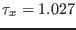
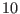
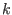
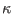
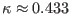
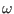
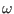

Next: Pressure-gradient driven channel flow Up: Idealised scenarios Previous: Idealised scenarios Contents
This is the simplest example designed for new users. It will tell you about how to run a simple unstratified flow with the most frequently used turbulence models. The term Couette-flow flow traditionally denotes an uni-directional, unstratified, non-rotating flow confined between two plates, of which one is moving with constant velocity. No pressure-gradient is applied. It is clear that this flow can also serve as a very simple model of the steady-state flow in a horizontally infinite ocean of finite depth, driven solely by a shear-stress at the surface.
A set of GOTM input files (containing all specifications needed for the runs) has been provided for 3 different turbulence models in the sub-directories kepsilon_nml/, komega_nml/ and MellorYamada_nml/. Copy all files from the subdirectory kepsilon_nml/ to the directory with the GOTM executable. We will call this directory the current directory in the following. How to install GOTM and create the executable is described on the GOTM web page at www.gotm.net. Take some time to have a look at the contents of these files.
In our example, the prescribed surface stress is  Pa, a quantity that can be set in the input file airsea.nml. This file contains many other variables that are related to the air-sea fluxes driving the model.
Parameters concerning the run are set in the input file gotmrun.nml. There, you will find for example the specification of the water depth ( m in this case) and the date and time of this run (24 hours until a steady-state is reached). The input file gotmrun.nml contains mainly parameters concerning the model run, the time step, the model time, the output format, etc.
All information about the turbulence models is read-in from the file
gotmturb.nml. Having a look in this file, you see that we
selected tke_method = 2 and length_scale_method = 8,
which corresponds exactly to the - model described in
section 4.7.28. The model parameters are given in the keps namelist. In this simple example, no Explicit Algebraic Stress
Model (see section 4.2) is solved in addition to the
transport equations for and
model described in
section 4.7.28. The model parameters are given in the keps namelist. In this simple example, no Explicit Algebraic Stress
Model (see section 4.2) is solved in addition to the
transport equations for and  . If you compare this gotmturb.nml with those found in the other sub-directories (e.g. for
the Mellor-Yamada model) it is easy to see how different turbulence
models can be activated by changing e.g. the value for length_scale_method.
. If you compare this gotmturb.nml with those found in the other sub-directories (e.g. for
the Mellor-Yamada model) it is easy to see how different turbulence
models can be activated by changing e.g. the value for length_scale_method.
If you run this scenario, GOTM will write information about the run
and the turbulence model to your screen: What are the parameters of
the run, like time step, date, layers, etc? What are the model
parameters of the turbulence model? What value has the von
Kármán constant, ? What value has the decay rate in
homogeneous turbulence,  ? And so on. All other output is written to
files called couette.out or couette.nc, depending on
whether you selected ASCII or NetCDF output in gotmrun.nml.
? And so on. All other output is written to
files called couette.out or couette.nc, depending on
whether you selected ASCII or NetCDF output in gotmrun.nml.
If you analyse the results, you will find that the turbulent kinetic
energy is constant over the whole depth, whereas the profiles of the
turbulent diffusivity and the length scale are approximately
parabolic. The length scale approaches the constant slope
 near the boundaries. If you want to change this value,
you can set compute_kappa = .false. in gotmturb.nml. Then, GOTM will automatically change the model
constants of the - model to compute the value of
prescribed in gotmturb.nml (see section 4.7.4).
model to compute the value of
prescribed in gotmturb.nml (see section 4.7.4).
There are other models you can use to calculate the Couette-flow. If
you copy all files from the directory MellorYamada_nml/ to the
current directory, GOTM will use the Mellor-Yamada model described in
section 4.7.27 with parameters set in gotmturb.nml. A
special role plays the so-called `generic model' described in
section 4.7.29. Other model like the - model or the
- model by Umlauf et al. (2003) can be considered as
special cases of the generic model. If you copy e.g. the files from
komega_nml/ to the current directory, the - model is
run for the couette case. For this simple flow, however, model results
will be quite similiar in all cases.
model or the
- model by Umlauf et al. (2003) can be considered as
special cases of the generic model. If you copy e.g. the files from
komega_nml/ to the current directory, the - model is
run for the couette case. For this simple flow, however, model results
will be quite similiar in all cases.